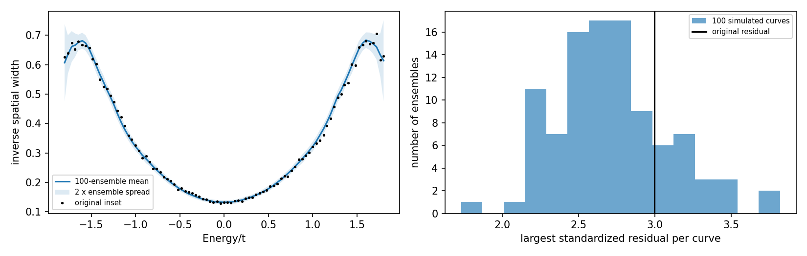
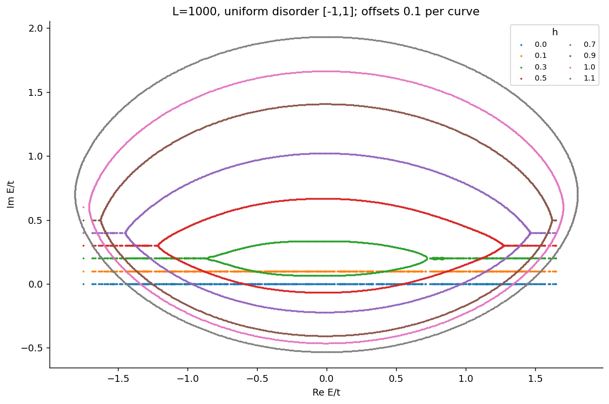
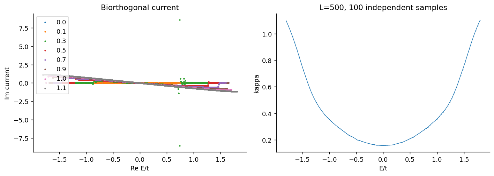

复能谱、局域到离域转变和电流结构得到支持。
核对版本：cond-mat/9603165v1 · 期刊原文
100组、每组100条500格点链：原图整曲线RMSE0.01019，模拟集合间RMSE中位数0.01313。原图最坏标准化偏差位于模拟分布约79百分位，先前肩部差异也落在集合波动范围。
仍需核对：结论以明确的原坐标空间宽度定义为条件；不是作者精确代码身份认证。这里的分位数不表示论文正确概率或复现评分。
任务范围：空间宽度原坐标定义下，原尺度100组无序集合支持余差统计相容；新诊断尚未更新原始对象验收，需保持完整来源对照的明确口径。作者精确种子或代码身份不作为额外完成要求。

必要的源结果与独立计算对照。Comparison reference: Phys. Rev. Lett. 77, 570 (1996), Localization Transitions in Non-Hermitian Quantum Mechanics, DOI 10.1103/PhysRevLett.77.570; fixed source cond-mat/9603165v1. Colored curves/maps are independent calculations; any source marks are limited validation excerpts, excluded from the repository content license. Graphic agreement does not establish author-array equality. Original figures and digitized source point sets are not redistributed.

独立计算结果。诊断变体以图例和说明为准，不自动替代论文条件。

独立计算结果。诊断变体以图例和说明为准，不自动替代论文条件。